Podcast
全部成員
 【完整翻譯】SINI스스 SINI登場!直播日期：2026-11-10BEGRITZ · BERGITZ 스스BEGRITZ
【完整翻譯】SINI스스 SINI登場!直播日期：2026-11-10BEGRITZ · BERGITZ 스스BEGRITZ 【完整翻譯】CHAN스스 等、等一下 我還在吹、吹頭髮中直播日期：2026-11-09BEGRITZ · BERGITZ 스스BEGRITZ
【完整翻譯】CHAN스스 等、等一下 我還在吹、吹頭髮中直播日期：2026-11-09BEGRITZ · BERGITZ 스스BEGRITZ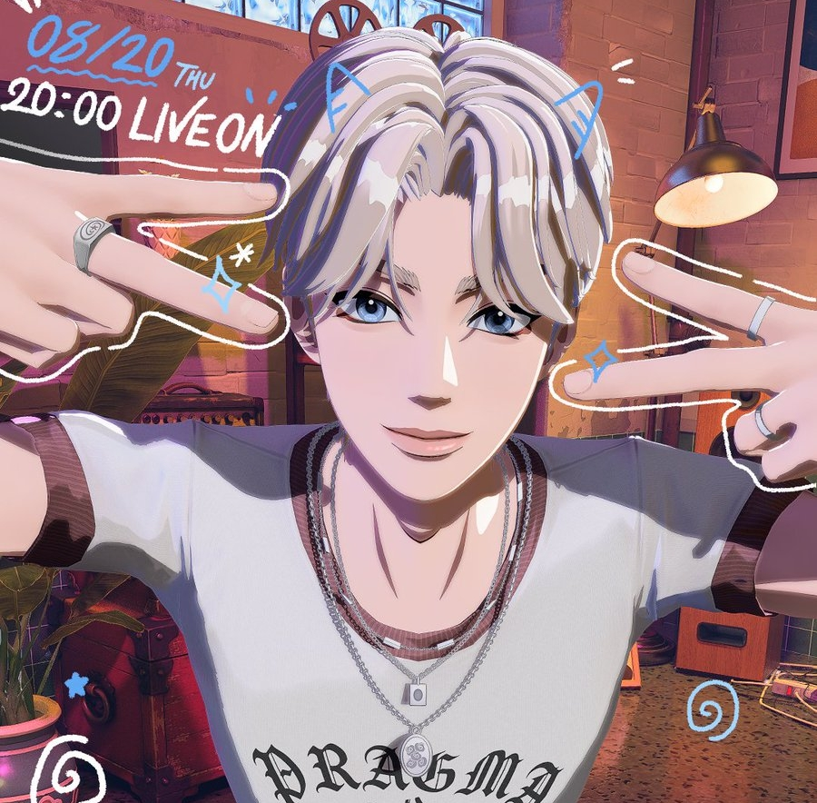
【完整翻譯】LUBIN스스 可以讓我坦白說一句真心話嗎？我想你們了直播日期：2026-11-08BEGRITZ · BERGITZ 스스BEGRITZ 【完整翻譯】DOHA스스 練習時忽然想到💜直播日期：2026-11-07BEGRITZ · BERGITZ 스스BEGRITZ【完整翻譯】CHAN스스 他們怎麼突然這樣啊？直播日期：2026-11-05BEGRITZ · BERGITZ 스스BEGRITZ【完整翻譯】TAEBUM스스 驚喜 SPACE 猜猜我是誰 提示：🪞直播日期：2026-11-03BEGRITZ · BERGITZ 스스BEGRITZ【完整翻譯】CHAN스스 想讓你們心想「怎麼還沒開始？都九點了耶？」直播日期：2026-11-02BEGRITZ · BERGITZ 스스BEGRITZ【完整翻譯】DOHA스스 誰要和 DOHA 一起療癒一下？🙌🏻💜直播日期：2026-10-31BEGRITZ · BERGITZ 스스BEGRITZ【完整翻譯】SINI스스 今天是和SINI變熟的日子！💚😚直播日期：2026-10-30BEGRITZ · BERGITZ 스스BEGRITZ
【完整翻譯】DOHA스스 練習時忽然想到💜直播日期：2026-11-07BEGRITZ · BERGITZ 스스BEGRITZ【完整翻譯】CHAN스스 他們怎麼突然這樣啊？直播日期：2026-11-05BEGRITZ · BERGITZ 스스BEGRITZ【完整翻譯】TAEBUM스스 驚喜 SPACE 猜猜我是誰 提示：🪞直播日期：2026-11-03BEGRITZ · BERGITZ 스스BEGRITZ【完整翻譯】CHAN스스 想讓你們心想「怎麼還沒開始？都九點了耶？」直播日期：2026-11-02BEGRITZ · BERGITZ 스스BEGRITZ【完整翻譯】DOHA스스 誰要和 DOHA 一起療癒一下？🙌🏻💜直播日期：2026-10-31BEGRITZ · BERGITZ 스스BEGRITZ【完整翻譯】SINI스스 今天是和SINI變熟的日子！💚😚直播日期：2026-10-30BEGRITZ · BERGITZ 스스BEGRITZ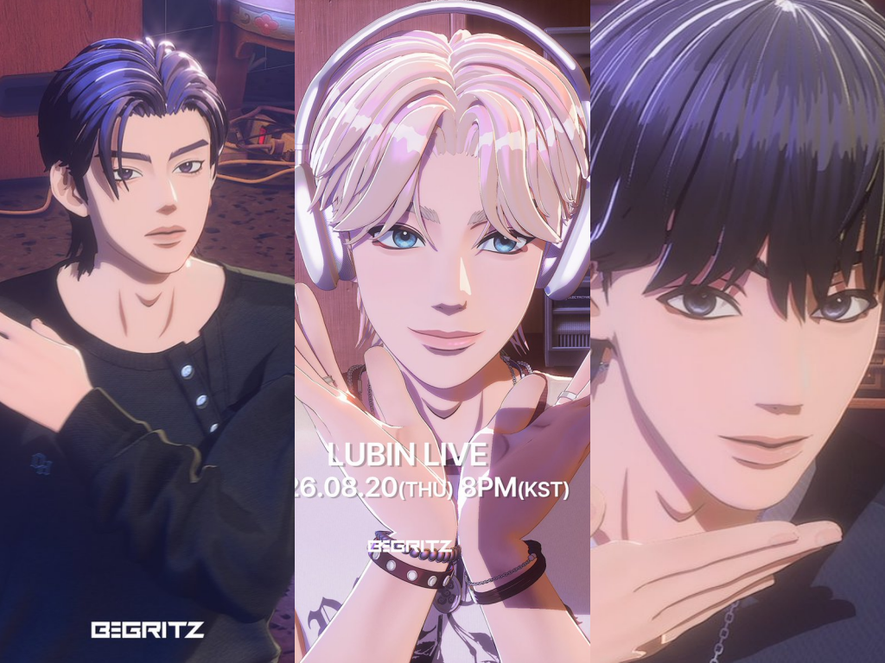
【完整翻譯】LUBIN스스 口渴 LUBIN、叉子 LUBIN、明明有180卻因為地面下陷變成175的 LUBIN、倉鼠 LUBIN、山雀 LUBIN直播日期：2026-10-29BEGRITZ · BERGITZ 스스BEGRITZ羽然스스 呦囉本_你們在哪裡直播日期：2026-10-28WE GO-6 · WEGO-6 스스WE GO-6時雨 스스 療癒時間直播日期：2026-10-28WE GO-6 · WEGO-6 스스WE GO-6【完整翻譯】도루태스스 突襲直播！DO/LU/TAE(도루태)甜點吃播，只播30分鐘喔🐾直播日期：2026-10-28BEGRITZ · BERGITZ 스스BEGRITZ【完整翻譯】CHAN 스스 黑執事塞巴斯CHAN，應公主的呼喚來到這裡了直播日期：2026-10-26BEGRITZ · BERGITZ 스스BEGRITZ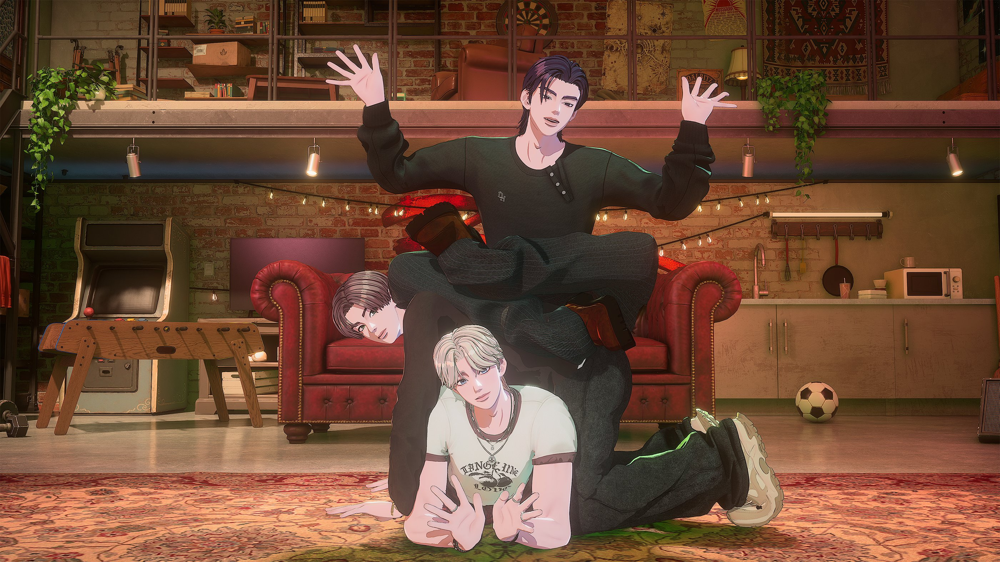
【完整翻譯】도루신 스스 今天的主角"DOLUSIN(도루신)"登場！💜💚直播日期：2026-10-25BEGRITZ · BERGITZ 스스BEGRITZ時雨 스스 你好時雨💜直播日期：2026-10-24WE GO-6 · WEGO-6 스스WE GO-6泰岡 스스 呦囉奔～🧡直播日期：2026-10-22WE GO-6 · WEGO-6 스스WE GO-6[Voice.Log] EP.02 高水準二選一辯論會 🧑🏫發布日期：2026-10-22BEGRITZ · YOUTUBEBEGRITZ【完整翻譯】TAEBUM 스스 誰回到月光商會了汪🐾🪞直播日期：2026-10-22BEGRITZ · BERGITZ 스스BEGRITZ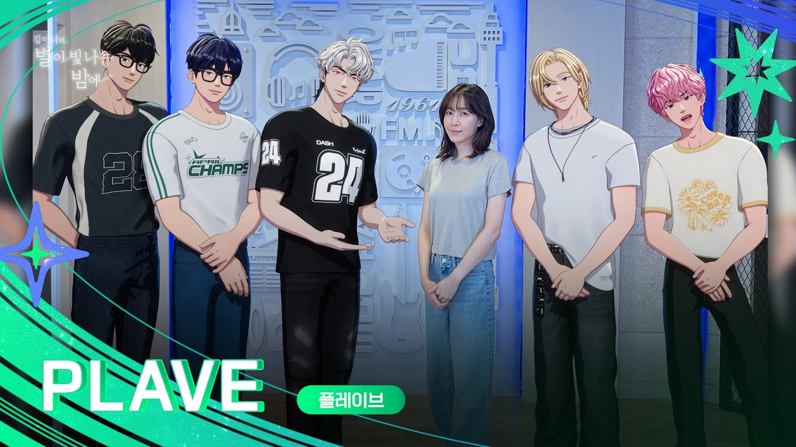
【完整版】PLLI 抓緊囉！✨PLAVE✨ 全速抵達星夜🏁｜金伊娜的星光燦爛的夜晚直播日期：2026-10-21PLAVE · YOUTUBEPLAVE時雨 스스 與時雨一起的下班之旅直播日期：2026-10-20WE GO-6 · WEGO-6 스스WE GO-6羽然스스 你在哪裡呀~直播日期：2026-10-20WE GO-6 · WEGO-6 스스WE GO-6【完整翻譯】CHAN 스스 大家好 我是 MOON CHAN 今天想和期待已久的大家開心地直播聊天 應該會很有趣吧 總之祝大家度過愉快的一天 哈哈直播日期：2026-10-20BEGRITZ · BERGITZ 스스BEGRITZZero 스스 有人要聊聊天嗎?直播日期：2026-10-19WE GO-6 · WEGO-6 스스WE GO-6時雨 스스 睡前來一下直播日期：2026-10-17WE GO-6 · WEGO-6 스스WE GO-6時雨 스스 星期五晚上直播日期：2026-10-16WE GO-6 · WEGO-6 스스WE GO-6[Voice.Log] EP.01 SINI 會答應成員們突如其來的請求嗎?｜BEGRITZ發布日期：2026-10-16BEGRITZ · YOUTUBEBEGRITZZero 스스 十一點整!!直播日期：2026-10-15WE GO-6 · WEGO-6 스스WE GO-6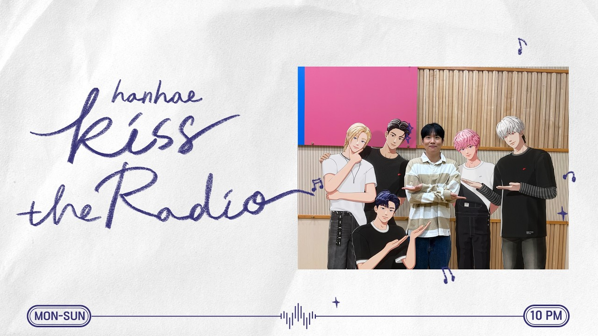
【完整版】韓海的 Kiss the Radio｜驚喜來賓席 with PLAVE直播日期：2026-10-15PLAVE · YOUTUBEPLAVE時雨 스스 吃晚餐前來一下直播日期：2026-10-15WE GO-6 · WEGO-6 스스WE GO-6時雨 스스 想你了呦直播日期：2026-10-13WE GO-6 · WEGO-6 스스WE GO-6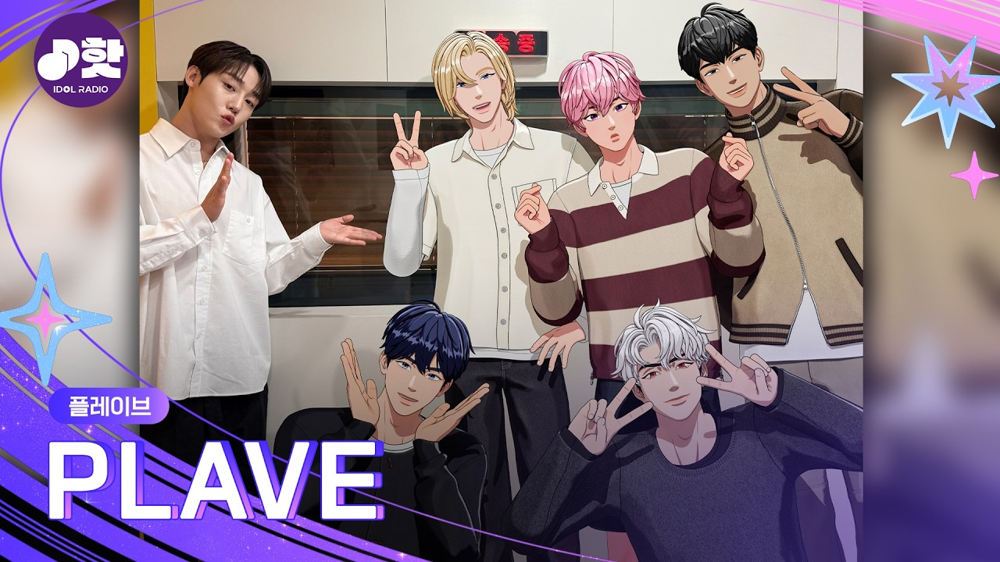
【完整版】PLLI 上車！跟著 PLAVE 追尋星星的足跡 全速前進🏎️💫｜IDOL RADIO UNIVERSE直播日期：2026-10-13PLAVE · YOUTUBEPLAVE羽然스스 秋天來臨時 🍂直播日期：2026-10-12WE GO-6 · WEGO-6 스스WE GO-6時雨 스스 WE日直播日期：2026-10-11WE GO-6 · WEGO-6 스스WE GO-6時雨 스스 呦囉奔的電池到啦！直播日期：2026-10-08WE GO-6 · WEGO-6 스스WE GO-6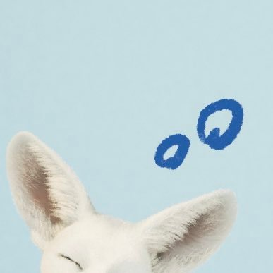
KUTA 스스 的Space直播日期：2026-10-06WE GO-6 · WEGO-6 스스WE GO-6時雨 스스 的Space直播日期：2026-10-05WE GO-6 · WEGO-6 스스WE GO-6時雨 스스 呦囉本~直播日期：2026-10-03WE GO-6 · WEGO-6 스스WE GO-6羽然스스 風車直播日期：2026-10-02WE GO-6 · WEGO-6 스스WE GO-6Zero 스스 Zero的Space直播日期：2026-10-01WE GO-6 · WEGO-6 스스WE GO-6時雨 스스 5分鐘直播日期：2026-09-29WE GO-6 · WEGO-6 스스WE GO-6時雨 스스 我的維他命直播日期：2026-09-28WE GO-6 · WEGO-6 스스WE GO-6時雨 스스 呦囉本直播日期：2026-09-27WE GO-6 · WEGO-6 스스WE GO-6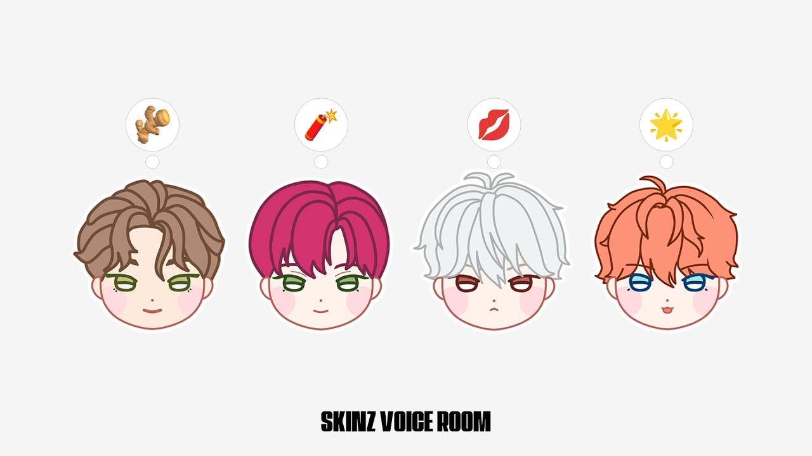
SKINZ VOICE ROOM (W. THEO, FINN, ILANG KWON, YULL)直播日期：2026-03-31SKINZ · Voice RoomSKINZ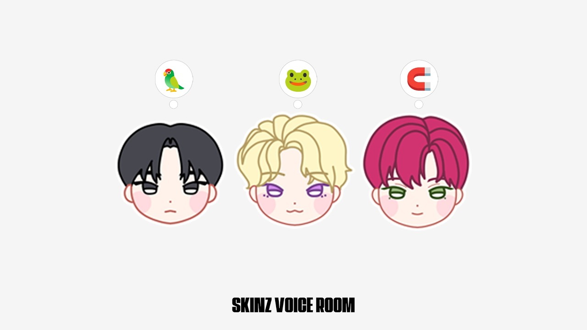
SKINZ VOICE ROOM (W. DOVIN, DAEL, FINN)直播日期：2026-03-26SKINZ · Voice RoomSKINZ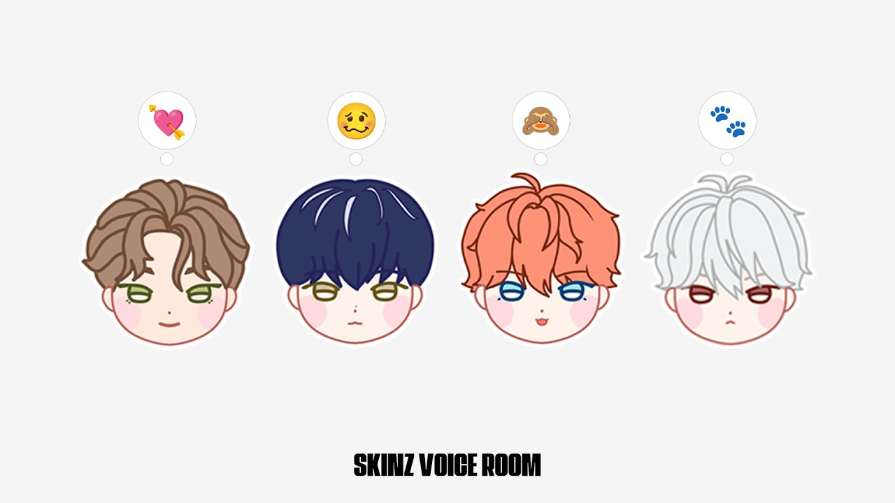
SKINZ VOICE ROOM (W. THEO, JAON, YULL, ILANG KWON)直播日期：2026-03-24SKINZ · Voice RoomSKINZ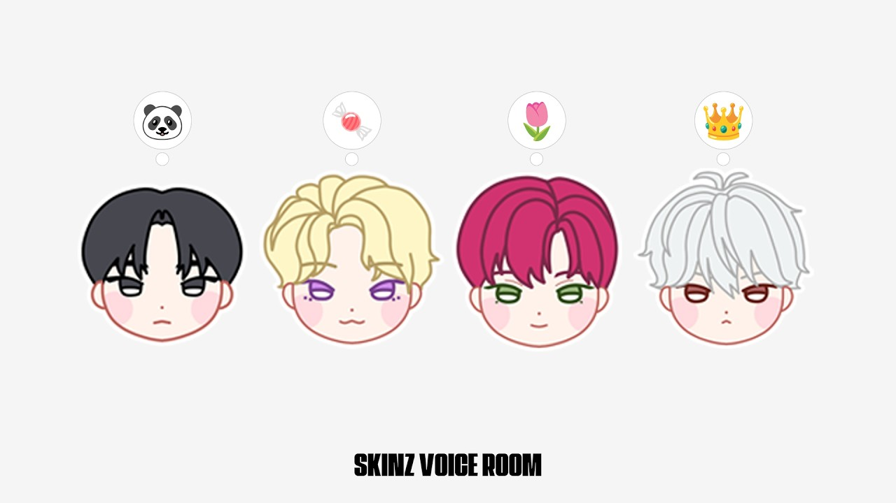
SKINZ VOICE ROOM (W. DOVIN, DAEL, FINN, ILANG KWON)直播日期：2026-03-19SKINZ · Voice RoomSKINZ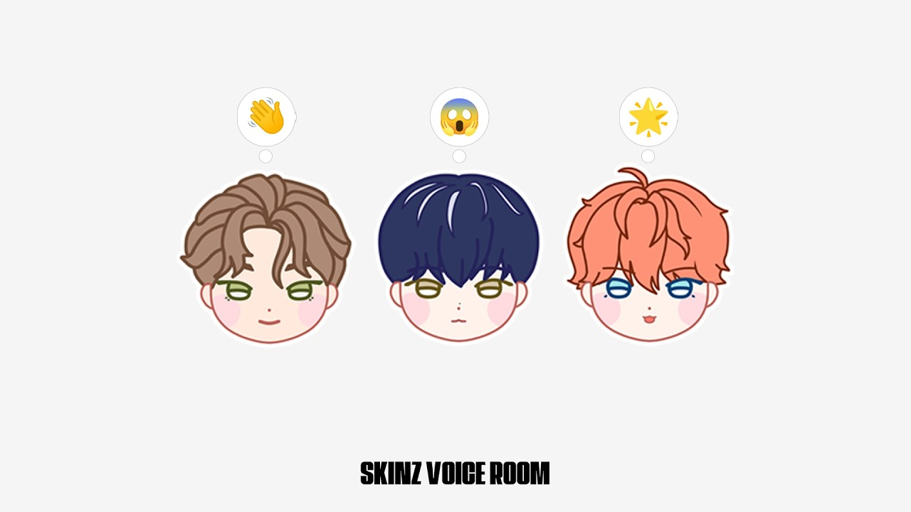
SKINZ VOICE ROOM (W. THEO, JAON, YULL)直播日期：2026-03-17SKINZ · Voice RoomSKINZ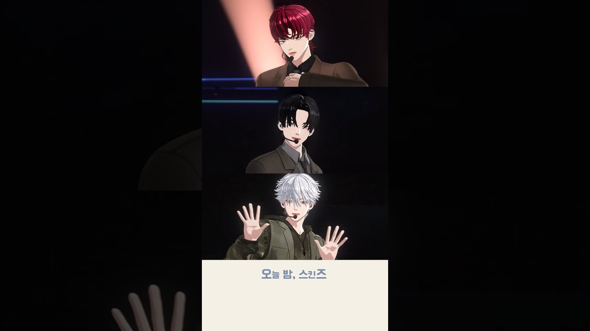
SKINZ The Way Back’單曲發行後 Voice Live直播日期：2025-05-11SKINZ · InstagramSKINZ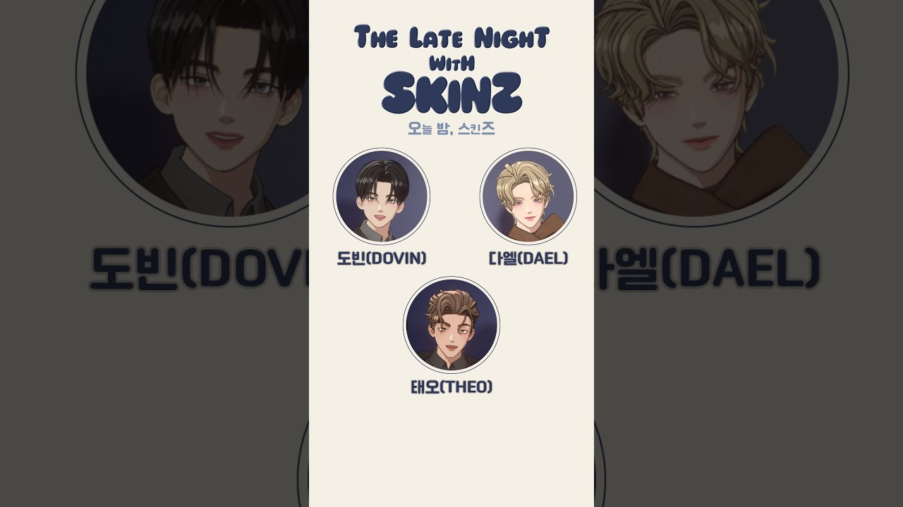
SKINZ 人氣歌謠舞台後 Voice Live直播日期：2025-05-04SKINZ · InstagramSKINZ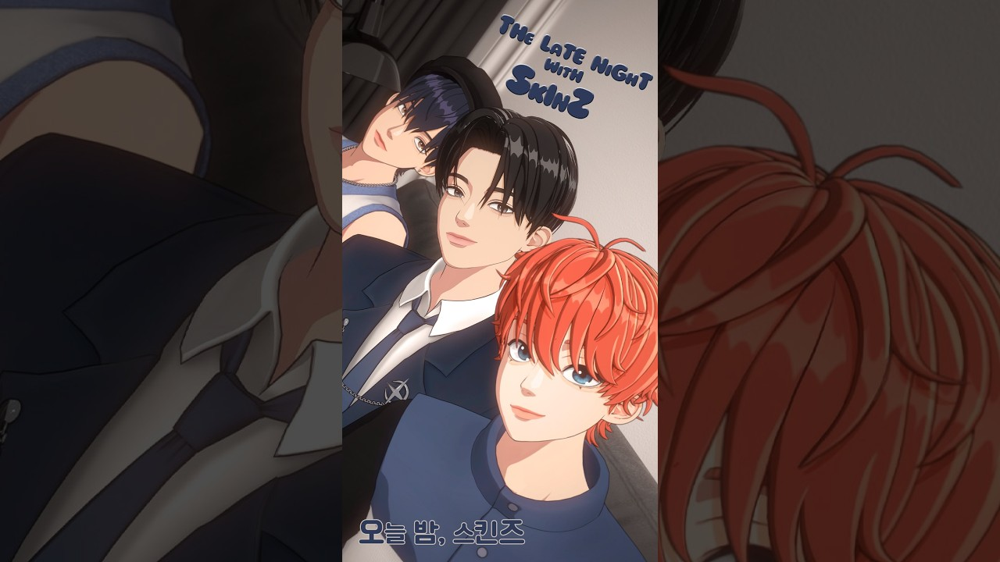
SKINZ SBS歌謠大戰東京巨蛋出道舞台後 首次 VOICE LIVE直播日期：2025-04-27SKINZ · InstagramSKINZ時雨 스스 晚餐稽查隊直播日期：未填寫WE GO-6 · WEGO-6 스스WE GO-6目前沒有符合的文章。